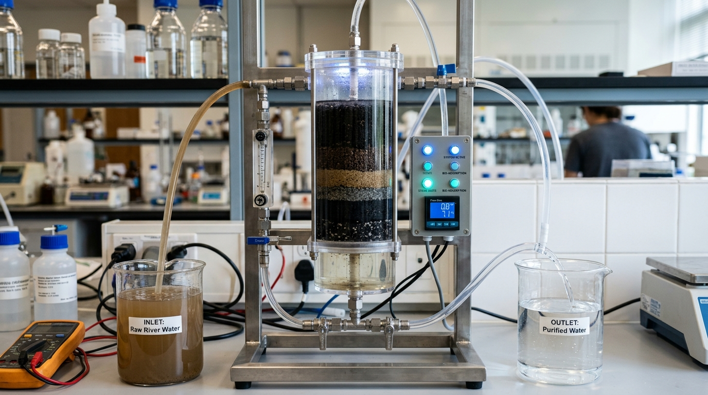
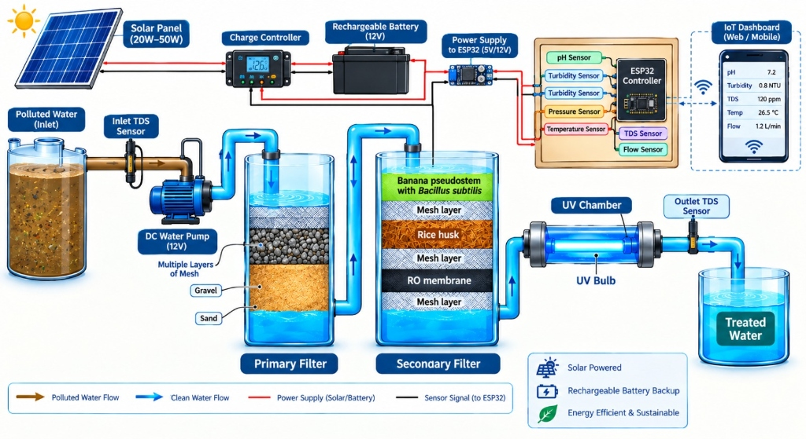

AGRO-BIO SORB
Smart Bio-Adsorptive Water Purification & Real-Time Quality Monitoring
An integrated bio-adsorptive filtration and IoT monitoring system designed for accessible, decentralized clean-water purification.

THE TEAM BEHIND AGRO-BIO SORB
Smart India Hackathon multidisciplinary engineering team combining environmental materials chemistry, embedded IoT hardware, and water engineering.
Mr. K. MUTHUSAMY
HOW IT WORKS
Click any stage in our six-phase process to inspect operational parameters.
PROTOTYPE ARCHITECTURE
Live engineering schematic of the solar-powered bio-adsorptive filtration testbed and IoT telemetry unit. Touch or click any component on the diagram to see how it works and inspect its technical specifications.

Secondary Bio-Filter (Banana Pseudostem + Bacillus subtilis & Rice Husk)
The core innovation of the AGRO-BIO SORB system. Combines functionalized banana pseudostem biomass augmented with a beneficial Bacillus subtilis bacterial biofilm to biosorb divalent heavy metals (Lead, Cadmium, Arsenic) and biodegrade organic pollutants. Backed by pyrolyzed rice husk biochar providing dense microporous carbon adsorption (>950 m²/g) to capture toxic dyes, and a polyamide RO membrane polishing layer to eliminate remaining dissolved ions.
SYSTEM COMPONENT DIRECTORY
Click any module below to inspect its live schematic node